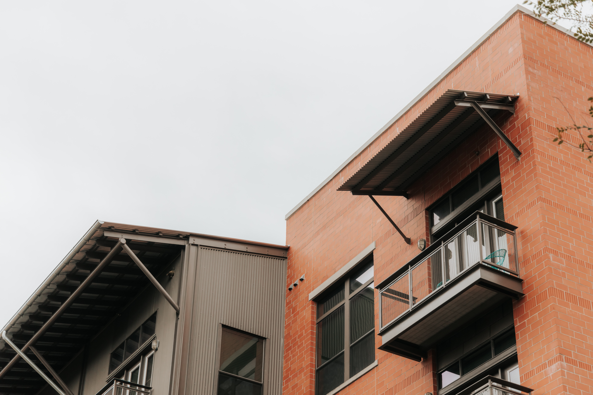
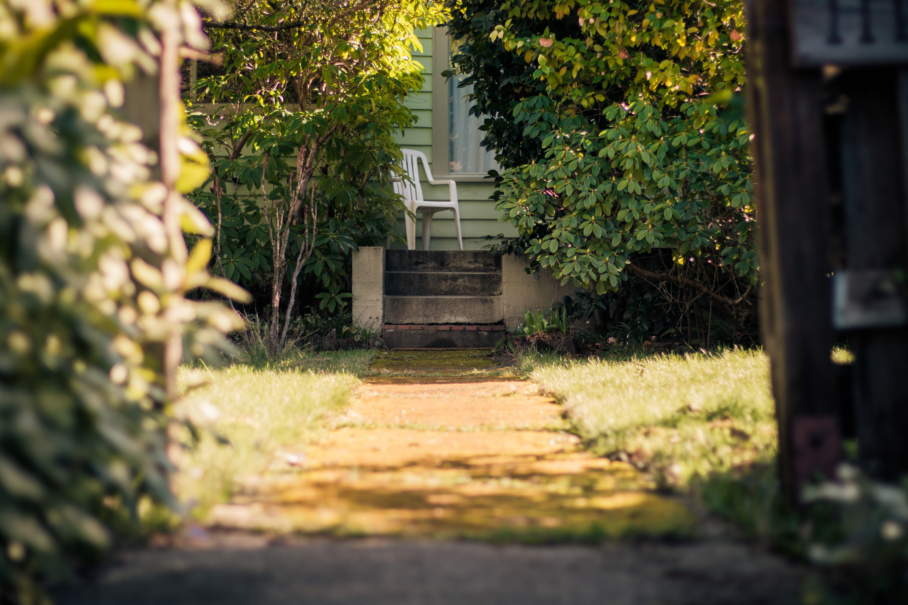

The Origin of Guilds:

In contrast to the land-bound serfs, townspeople of the Middle Ages were free. Some engaged in commerce and formed groups known as merchant guilds. The majority, however, were small merchant-craftsmen, organized in craft guilds as masters (of highest accomplishment and status), journeymen (at a middle level), and apprentices (beginners). The medieval master was typically many things at once: a skilled workman himself; a foreman, supervising journeymen and apprentices; an employer; a buyer of raw or semifinished materials; and a seller of finished products. Because medieval craftsmen employed simple hand tools, a workman’s own skill determined the quantity and quality of his output. Apprentices and journeymen underwent long periods of learning under the guidance of a more experienced workman. When he could produce a “masterpiece” that met the approval of the guild masters, the craftsman would gain full admission into the guild.
Why Guilds?

During this time of social distancing, COVID-19, community in-fighting, and isolation, there is a stronger need than ever for building kinship. There aren’t many platforms or systems for creating deep connections with others outside of the realm of romantic intentions or capitalist interests. Creating space and dedicating time to build genuine relationships with folks who live in close proximity is the path for the future. Local peer networks made up of individuals who share similar ideologies can create spires of power that can lead to real change and meet the material needs of its participants. Historically mutual aid networks have been successful, but a stumbling block has been scaling up too far, too fast. The process of creating small guilds should focus on peer learning and the management of community knowledge pools. Sharing and exchanging knowledge through gamification and organic discussion is what will make the future of guilds the support system we need during these trying times.
The Legacy of Guilds:

From the street stoop to the house party, the transfer of knowledge for the sake of empowerment through generational peer networks have always helped marginalized communities get closer to prosperity. By using our imaginations and collective dreaming we can build a new world in our local reality at small scales that can inspire change in far-off networks. The human technologies at our disposal allow us to garner the warmth and fellowship that has been missing from the public discourse of the present. Sometimes you don’t need the newest techniques to solve old problems. This webspace hopes to combine the old and the new to foster sustaining communities.